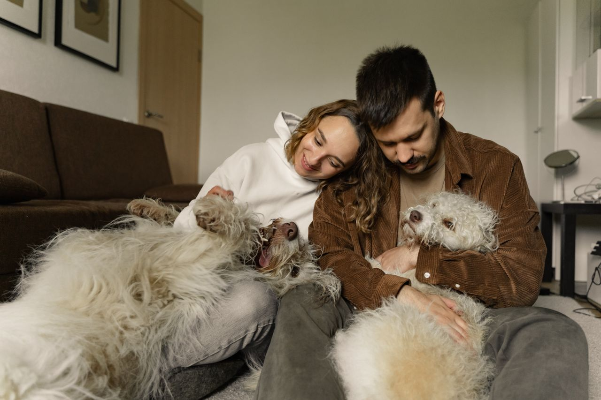

|
Built on TrustTrust is the foundation of everything we do. We encourage clear profiles, honest reviews, and open communication so both homeowners and sitters know exactly what to expect. By keeping things transparent and community-driven, we make it easier for good people to connect and feel confident leaving their homes in someone else’s care. |
 |